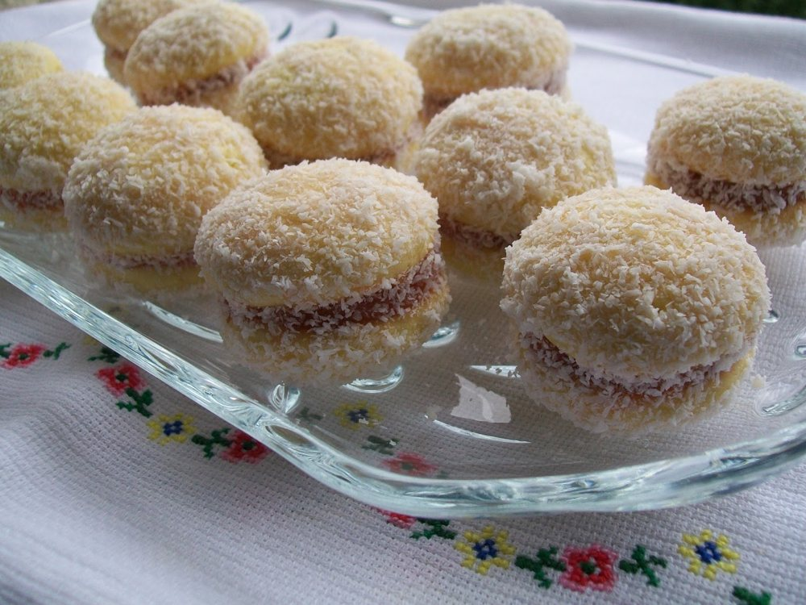

Doces · Biscoitos
Casadinhos recheados

Ingredientes
- 1 ¼ xícara de margarina
- 1 xícara mais 5 colheres (sopa) de açúcar
- ½ colher (chá) de canela em pó
- 1 pitada de sal
- 1 ovo
- 2 ⅔ xícaras de farinha de trigo
- Farinha de trigo para polvilhar
- Manteiga para untar
- 1 xícara de doce de leite
- 1 pacote pequeno (50 g) de coco ralado
Modo de preparo
- Coloque a margarina ligeiramente amolecida numa tigela e bata até obter um creme.
- Acrescente 1 xícara de açúcar, a canela em pó, o sal e o ovo inteiro.
- Quando tudo estiver bem misturado, acrescente a farinha peneirada. Trabalhe a massa com as mãos. Abra a massa com o rolo de cozinha numa superfície de trabalho polvilhada com farinha de trigo até ficar com 0,5 cm de espessura. Corte a massa com um cortador de biscoitos redondo, com cerca de 4,5 cm de diâmetro. Junte as sobras da massa, amasse novamente e corte também.
- Preaqueça o forno em temperatura média (180 °C) e leve os biscoitos para assar em fôrmas levemente untadas com manteiga. Asse por 10 a 15 minutos ou até os biscoitos ficarem dourados.
- Retire os biscoitos do forno, envolva-os com o açúcar restante e recheie-os fartamente com uma mistura previamente preparada com o doce de leite e o coco ralado. Deixe esfriar e congele.
Observação
Esses biscoitos sem o recheio são crocantes; em contato com o creme, ficam mais macios, mas são muito gostosos e delicados. Congelamento: coloque os biscoitos num recipiente rígido, bem próximos uns dos outros, e preencha os espaços vazios com toalhas de papel; intercale as camadas de biscoitos também com toalhas de papel. Vede bem, etiquete e congele. Descongelamento: em temperatura ambiente por cerca de 1 hora.